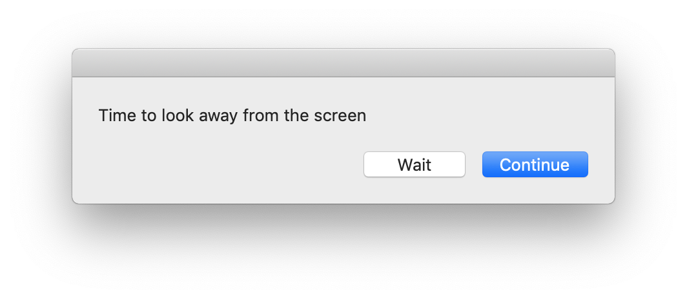
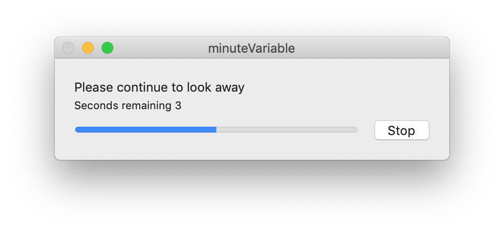

Intervention mid-level 01
20-20
An application that reminds you to look away from your computer every 20 minutes for 20 seconds.
Other iterations: 11 01
Other iterations: 11 01
A short video of the interactions with the application.

The window the user is prompted with to look away.

The window reminding the user to continue looking away.
Why it was selected
I created a poll asking people about which of my low-fidelity interventions they liked the most. This was the most popular and since it seemed feasible I went forward with it.
Feedback
At this stage, this application went through several iterations. After learning AppleScript and building the basic application, I started to add more to it. I added the ability to wait a short period of time so that people could finish their train of thought before looking away. I also made the application force itself to the top and play a sound to make it harder to ignore.
The biggest criticism I got was that the countdown timer was distracting when a user was supposed to not look at the screen.
AppleScript Code:
-- (c) 2018 Will Kuglen
on idle
my lookAway()
return 60
end idle
on lookAway()
set waitDelay to 3 --Change to '60' for 60s
set reminderFrequency to 60 --Change to '1200'(60*20) for 20min
set lookAwayTime to 5 --Change to '20' for 20s
delay 1
tell application "System Events"
set activeApp to name of first application process whose frontmost is true
end tell
set UserNotReady to true
repeat until UserNotReady is false
activate
beep 2
set Response to display dialog "Time to look away from the screen" buttons {"Wait", "Continue"} default button "Continue"
if button returned of Response is "Continue" then
set UserNotReady to false
else
delay waitDelay
end if
end repeat
set progress description to "Please continue to look away"
set progress additional description to "Preparing…"
set STEPS to lookAwayTime
set progress total steps to STEPS + 1
set progress completed steps to 0
repeat with i from 1 to STEPS
try
set progress additional description to "Seconds remaining " & lookAwayTime - i + 1
set progress completed steps to i
delay 1
on error thisErr
display alert thisErr
exit repeat
end try
end repeat
beep 3
activate application activeApp
end lookAway
on quit
continue quit
end quit
| NEXT >